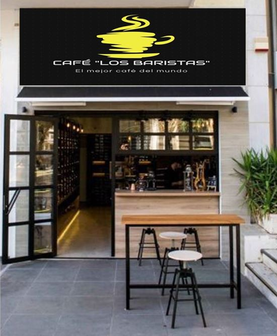
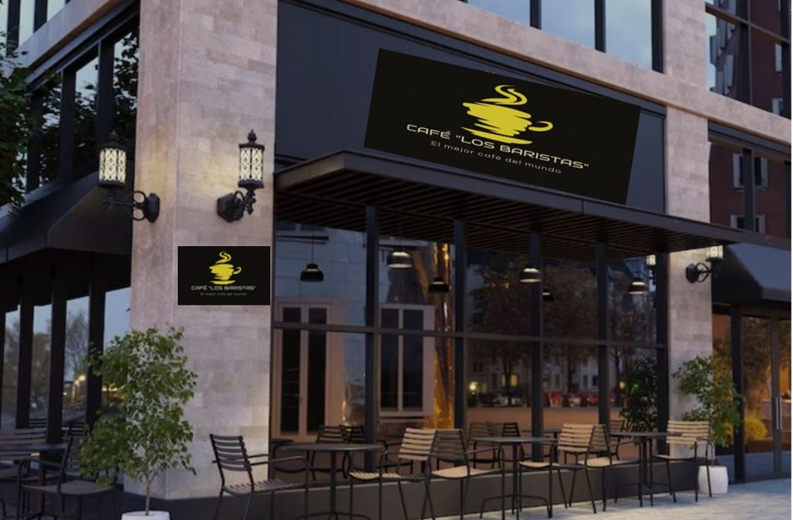
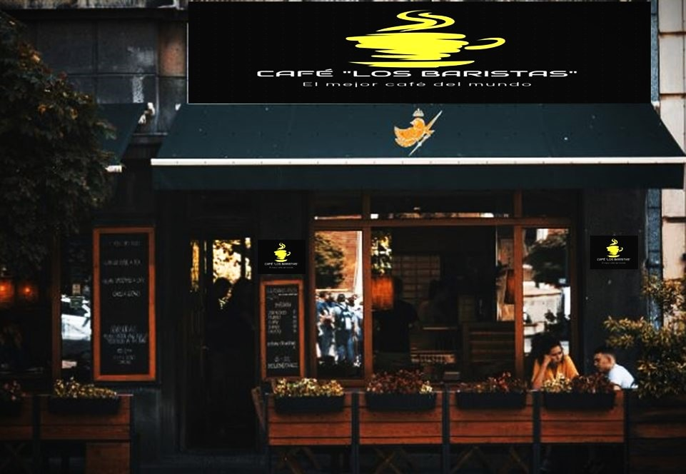

Los Baristas
Te invitamos a sumergirte en el mundo del Café
Variedad de granos de café
Proceso de Molienda
Cafeteras y accesorios
Contacto
Cápsulas de café
Té en hebras
NUESTRAS SUCURSALES
  
Elija su bebida favorita
Café expreso
Café cortado
Americano
Latte Machiatto
Capuccino
Frapuccino
Té en Hebras
Historia del café
Encontranos en nuestras redes
ᶠᵃᶜᵉᵇᵒᵒᵏ
𝓘𝓷𝓼𝓽𝓪𝓰𝓻𝓪𝓶